# install pacman before executing this code
install.packages('pacman')
# I also used the remotes to install directly from github
remotes::install_github('r-spatial/rgee')Module 5. Open-Source Data for Epidemic Intelligence
This Quarto document is written for the trainees of Data Use for Decision Science curriculum organized by Resolve to Save Lives (RTSL).
Objectives
- Understand the basic concepts of API and JSON
- Retrieve and use open-source data for your data use projects with R
Required packages
pacman::p_load(
# helper packages
here,
rio,
# basic packages for data manipulation
ggplot2, # The gold standard system for creating declarative and layered data visualizations.
dplyr, # A grammar for fast and intuitive data manipulation and transformation.
tidyverse, # An opinionated collection of R packages designed for cohesive data science workflows.
magrittr, # Provides the pipe operator (%>%) to make code more readable and functional.
stringr, # String manipulation package.
# packages to make API calls, read json, convert json to data frame
httr, # Tools for working with HTTP requests to pull data from web APIs.
jsonlite, # A robust parser for converting JSON data into R objects and data frames.
geojson, # Tools for processing and validating GeoJSON data structures.
geojsonsf, # Quickly converts GeoJSON strings or files into simple-feature (sf) objects.
rvest, # Specifically designed to scrape and harvest data from HTML web pages.
# packages for raster data handling
raster, # Essential for reading, writing, and manipulating gridded geographic data.
terra, # The high-performance successor to 'raster' for handling massive gridded datasets.
exactextractr, # Rapidly summarizes raster values (like rainfall) within vector zones (like districts).
spdep, # Essential for spatial econometrics and calculating spatial weights and autocorrelation.
# visualization packages for maps
leaflet, # Creates interactive, mobile-friendly web maps for exploration and dashboards.
sp, # A legacy framework for defining and managing spatial data structures in R.
tmap, # A flexible system for creating both static and interactive thematic maps.
sf, # The modern standard for handling "simple features" (vector) spatial data.
scales, # Automatically determines breaks and labels for axes and map legends.
# Some additional packages I used for GEE
reticulate, # R-python interface
rgee, # R-GEE interface
caret,
geojsonio,
# Open Street Map pacakge
osrm
)Example 1. Worldpop
This code uses the downloaded geotiff data from WorldPop and calculates the population estimate for polygons in a given shapefile. Here, we’re not using API calls. This approach is suitable when the data is not dynamic (meaning it only gets updated once every year or a longer interval.
- Geotiff data can be searched and downloaded directly from WorldPop Data Catalog
- For more reliable population estimates (availability varies by country), use WorldPop Open Population Data Repository
- Pre-requisite: shapefile with polygons for which you’d like to extract the population estimates for
Mozambique population estimates (~100m) for specific age-sex group
I downloaded this set of geotiff data from here.
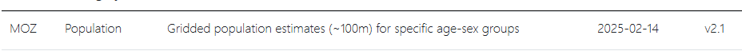
When you extract the zip file, you will see there are separate geotiff images for each age-sex group.
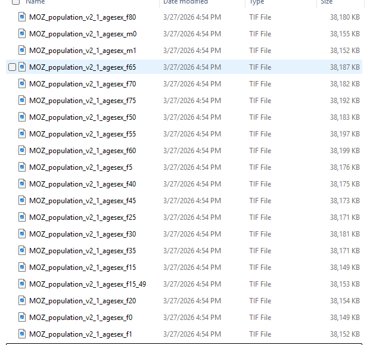
For this example, we will try to extract the # of women in their reproductive age (15-49 years).
# Load Mozambique shapefile with ADM3 level boundaries
moz_shp <- read_sf(dsn = here::here("data", "MOZ_shapefile",
"moz_admin3.shp"))
# Inspect the loaded shapefile
names(moz_shp) [1] "adm3_name" "adm3_name1" "adm3_name2" "adm3_name3" "adm3_pcode"
[6] "adm2_name" "adm2_name1" "adm2_name2" "adm2_name3" "adm2_pcode"
[11] "adm1_name" "adm1_name1" "adm1_name2" "adm1_name3" "adm1_pcode"
[16] "adm0_name" "adm0_name1" "adm0_name2" "adm0_name3" "adm0_pcode"
[21] "valid_on" "valid_to" "area_sqkm" "cod_versio" "lang"
[26] "lang1" "lang2" "lang3" "adm0_en" "adm3_ref_n"
[31] "center_lat" "center_lon" "geometry" plot(moz_shp)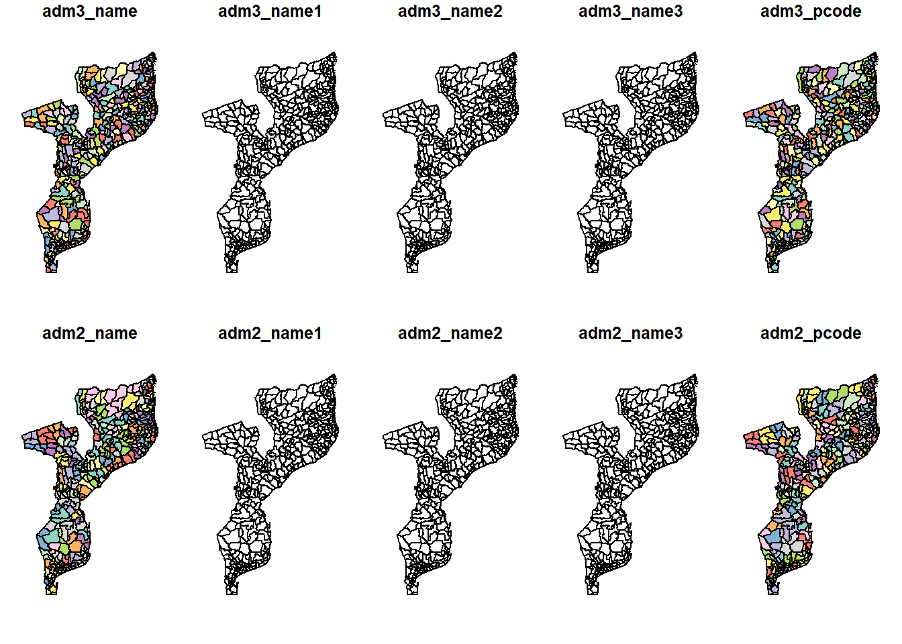
# check the CRS - you'll see it's WGS 84
crs(moz_shp) [1] "GEOGCRS[\"WGS 84\",\n DATUM[\"World Geodetic System 1984\",\n ELLIPSOID[\"WGS 84\",6378137,298.257223563,\n LENGTHUNIT[\"metre\",1]]],\n PRIMEM[\"Greenwich\",0,\n ANGLEUNIT[\"degree\",0.0174532925199433]],\n CS[ellipsoidal,2],\n AXIS[\"geodetic latitude (Lat)\",north,\n ORDER[1],\n ANGLEUNIT[\"degree\",0.0174532925199433]],\n AXIS[\"geodetic longitude (Lon)\",east,\n ORDER[2],\n ANGLEUNIT[\"degree\",0.0174532925199433]],\n ID[\"EPSG\",4326]]"# Load the geotiff data for women in reproductive age (100m res)
pop_reprod <- raster(here::here("data", "MOZ_pop_agesex",
"MOZ_population_v2_1_agesex_f15_49.tif"))
# (Optional) aggregate by factor of 10 to make it a 1km resolution. This takes time but it will accelerate the subsequent steps to be faster.
pop_reprod2 <- aggregate(pop_reprod, fact=10, fun=sum)
# Calculate the population estimate per ADM3 level
## Use this line if you want to use the 1km resolution geotiff (this might save some time)
total_pop_reprod <- terra::extract(pop_reprod2, moz_shp, fun=sum, na.rm=T)
## Use this line if you want to use the original 100m resolution geotiff (this might take a lot of time)
#total_pop_reprod <- terra::extract(pop_reprod, moz_shp, fun=sum, na.rm=T)
# Merge the population estimate per ADM3 with the shapefile
moz_shp %<>% cbind(total_pop_reprod)
head(moz_shp %>%
dplyr::select(adm1_name,
adm2_name,
adm3_name,
total_pop_reprod),
n=5)Simple feature collection with 5 features and 4 fields
Geometry type: MULTIPOLYGON
Dimension: XY
Bounding box: xmin: 33.26154 ymin: -24.53091 xmax: 40.23524 ymax: -13.79439
Geodetic CRS: WGS 84
adm1_name adm2_name adm3_name total_pop_reprod
1 Nampula Meconta 7 De Abril 8911.733
2 Gaza Chibuto Alto Changane 1617.950
3 Zambezia Gile Alto Ligonha 17125.902
4 Zambezia Alto Molocue Alto Molocue 68715.044
5 Nampula Erati Alua 22257.484
geometry
1 MULTIPOLYGON (((39.61687 -1...
2 MULTIPOLYGON (((33.36406 -2...
3 MULTIPOLYGON (((37.9378 -15...
4 MULTIPOLYGON (((37.89211 -1...
5 MULTIPOLYGON (((39.99863 -1...# Plot the result to check
### plot the map of Mozambique with ADM3 boundaries
ggplot(moz_shp) +
### each ADM3 level area to be filled using the estimated population size
geom_sf(aes(fill = total_pop_reprod)) +
### apply color gradient from white (0 women in reproductive age) to dark purple (high # of women in reproductive age())
scale_fill_gradient(low = "#ebecf2",
high = "#3f1f59",
name = "Population estimate",
labels = scales::label_number_auto()) +
### remove background color in the ggplot
theme_void() +
### add a plot title
ggtitle("# of Women in Reproductive Age (15-49 yrs, as of 2025)")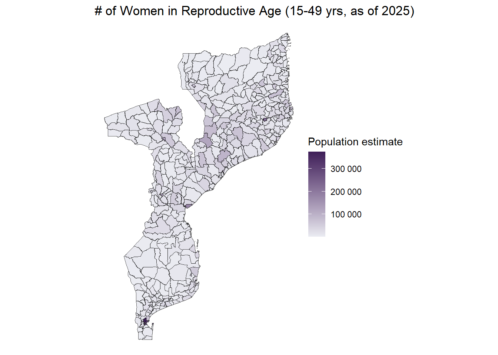
# Save
rio::export(file=here::here("clean data",
paste0("moz_pop_reprod_",Sys.Date(), ".csv")), # Save the file with the time stamp
x=moz_shp %>% st_drop_geometry) # drop geo coordinate so that the file is not too heavyExample 2. GRID3
This code uses the REST API to request from GRID3 on the locations of IDP sites in Nigeria. The API query can be found here
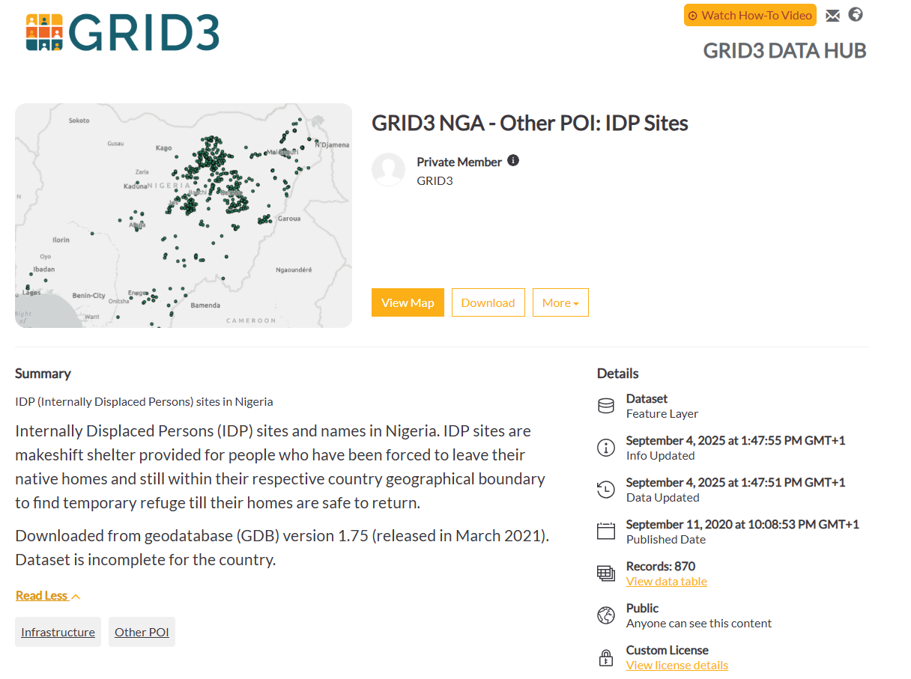
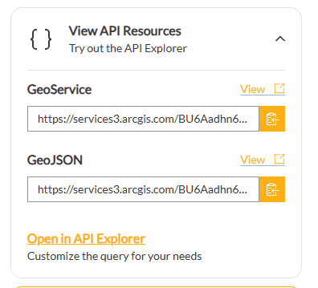
# save REST API query to request geojson data into an object
grid3_url <- "https://services3.arcgis.com/BU6Aadhn6tbBEdyk/arcgis/rest/services/IDP_sites_in_Nigeria/FeatureServer/0/query?outFields=*&where=1%3D1&f=geojson"
# Read the GeoJSON from the URL and converts it into a 'sf' spatial object.
dat_nga_idp <- geojson_sf(grid3_url)
# Inspect the converted sf object
head(dat_nga_idp)Simple feature collection with 6 features and 43 fields
Geometry type: POINT
Dimension: XY
Bounding box: xmin: 11.21581 ymin: 8.90693 xmax: 13.06145 ymax: 11.8375
Geodetic CRS: WGS 84
FID globalid uniq_id timestamp editor
1 1 60743464-685e-4418-b744-3b11da32dba6 7794 1.51753e+12 dennis.irorere
2 2 0121963c-c46e-45fa-a1b7-b266800481f6 7795 1.51753e+12 dennis.irorere
3 3 21ece69f-79d9-401a-b1a8-4003de21e0c2 7796 1.51753e+12 dennis.irorere
4 4 1e4d7c49-f4e6-42cb-bf10-ee38279c7b4d 7207 1.51753e+12 adanna.alex
5 5 ba96ce41-fe3b-472b-98ba-3b9073fc068a 7787 1.51753e+12 adanna.alex
6 6 fb6cac58-2afe-4fb0-9df8-54029cf46ce2 7788 1.51753e+12 adanna.alex
wardname wardcode lganame lgacode statename statecode idp_hf_prv idp_hf
1 Jauro Yinu TRSARD05 Ardo-Kola 35001 Taraba TA Government Yes
2 Jauro Yinu TRSARD05 Ardo-Kola 35001 Taraba TA
3 Yitti TRSLAU10 Lau 35010 Taraba TA
4 Auno 11602 Konduga 116 Borno BR
5 Malam Sidi GMSKWM09 Kwami 16008 Gombe GO
6 Lankaviri TRSYRR05 Yorro 35015 Taraba TA
idp_am_mdc tot_hhold f_pop_60 m_pop_pl60 f_pop18_59 m_pop18_59 f_pop6_17
1 No 17 2 3 22 18 14
2 0 0 0 0 0 0
3 0 0 0 0 0 0
4 0 0 0 0 0 0
5 0 0 0 0 0 0
6 0 0 0 0 0 0
m_pop6_17 f_pop1_5 m_pop1_5 f_pop_und1 b_pop_und1 site_id idp_prtb_w
1 12 6 4 2 2 TR_S023 Yes
2 0 0 0 0 0 TR_S030
3 0 0 0 0 0 TR_S025
4 0 0 0 0 0
5 0 0 0 0 0
6 0 0 0 0 0 TR_S035
idp_amnts idp_am_hs idp_am_med agncy_cntc agency_nam sma_type site_cls_d
1 Yes Yes Yes 0 NA
2 Yes 0 NA
3 Yes 0 NA
4 0 NA
5 0 NA
6 Yes 0 NA
site_opn_d site_statu site_type set_name alt_st_nam
1 NA Informal Camp Tumdiri
2 NA Informal Camp Kofai
3 NA Collective Settlement/Centre Cocin Church
4 NA Auno-Chabbol
5 NA Host Communities Gari-Azumi
6 NA Informal Transitional Centre Lankaviri
t_pop_und5 total_pop pop_source site_name
1 0 85 IOM DTM RD24 August 2018 Tumdiri
2 0 0 IOM DTM RD24 August 2018 GDSS Kofai Camp
3 0 0 IOM DTM RD24 August 2018 Cocin Church
4 0 0 eHA_Polio Kofa Auno
5 0 0 IOM DTM RD16 May 2017 Gari Azumi
6 0 0 IOM DTM RD24 August 2018 Bishops Court
geometry
1 POINT (11.30571 8.91475)
2 POINT (11.31228 8.90693)
3 POINT (11.21581 9.04654)
4 POINT (13.06145 11.8375)
5 POINT (11.28758 10.47618)
6 POINT (11.4183 8.99954)# Label the sites with no identified type
dat_nga_idp %<>% mutate(
site_type = ifelse(site_type ==" ", "Not identified", site_type)
)
# Load and inspect Nigeria shapefile
nigeria <- read_sf(dsn = here::here("data",
"NGA_shapefile",
"nga_admbnda_adm2_osgof_20190417.shp"))
# Inspect the shapefile
head(nigeria); plot(nigeria)Simple feature collection with 6 features and 16 fields
Geometry type: MULTIPOLYGON
Dimension: XY
Bounding box: xmin: 6.778522 ymin: 4.888055 xmax: 13.83477 ymax: 13.71406
Geodetic CRS: WGS 84
# A tibble: 6 × 17
Shape_Leng Shape_Area ADM2_EN ADM2_PCODE ADM2_REF ADM2ALT1EN ADM2ALT2EN
<dbl> <dbl> <chr> <chr> <chr> <chr> <chr>
1 0.237 0.00152 Aba North NG001001 Aba North <NA> <NA>
2 0.262 0.00353 Aba South NG001002 Aba South <NA> <NA>
3 3.08 0.327 Abadam NG008001 Abadam <NA> <NA>
4 2.54 0.0684 Abaji NG015001 Abaji <NA> <NA>
5 0.687 0.0145 Abak NG003001 Abak <NA> <NA>
6 1.06 0.0379 Abakaliki NG011001 Abakaliki <NA> <NA>
# ℹ 10 more variables: ADM1_EN <chr>, ADM1_PCODE <chr>, ADM0_EN <chr>,
# ADM0_PCODE <chr>, date <date>, validOn <date>, validTo <date>, SD_EN <chr>,
# SD_PCODE <chr>, geometry <MULTIPOLYGON [°]>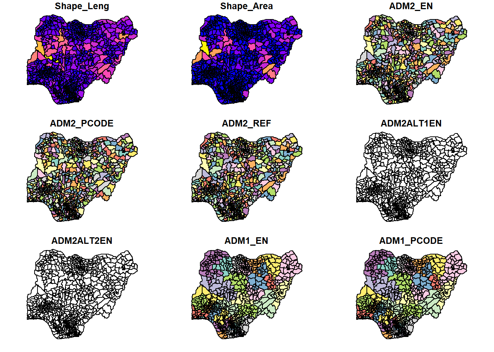
# Get the CRS
crs(nigeria) # WGS 84[1] "GEOGCRS[\"WGS 84\",\n DATUM[\"World Geodetic System 1984\",\n ELLIPSOID[\"WGS 84\",6378137,298.257223563,\n LENGTHUNIT[\"metre\",1]]],\n PRIMEM[\"Greenwich\",0,\n ANGLEUNIT[\"degree\",0.0174532925199433]],\n CS[ellipsoidal,2],\n AXIS[\"geodetic latitude (Lat)\",north,\n ORDER[1],\n ANGLEUNIT[\"degree\",0.0174532925199433]],\n AXIS[\"geodetic longitude (Lon)\",east,\n ORDER[2],\n ANGLEUNIT[\"degree\",0.0174532925199433]],\n ID[\"EPSG\",4326]]"# Plot
## Plot Nigeria map
ggplot(nigeria) +
## Color coded by ADM1 (regions)
geom_sf(aes(fill=ADM1_EN), alpha = 0.2) +
## Plot IDP sites
geom_sf(dat = dat_nga_idp, aes(color = site_type))+
## Remove backgrounds
theme_void() +
## Add a plot title
ggtitle("IDP site locations in Nigeria") +
## Aesthetic adjustments
theme(legend.title = element_blank())+
scale_fill_discrete(guide = "none")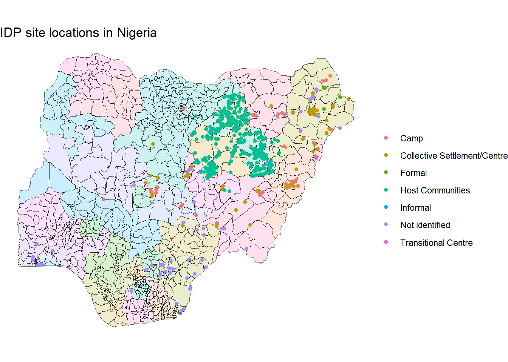
# Save
st_write(dat_nga_idp,
here::here("clean data",
paste0("NGA_idp_",Sys.Date(),".csv")),
delete_dsn=T # delete and replace if there is already a file with the same name
)Deleting source `C:/Users/SooyoungKim/OneDrive - Resolve to Save Lives/PE Team - EWEA/Collaborative Surveillance/Technical Packages/Epidemic Intelligence Training/Module 5 Open Source Data/clean data/NGA_idp_2026-03-31.csv' failed
Writing layer `NGA_idp_2026-03-31' to data source
`C:/Users/SooyoungKim/OneDrive - Resolve to Save Lives/PE Team - EWEA/Collaborative Surveillance/Technical Packages/Epidemic Intelligence Training/Module 5 Open Source Data/clean data/NGA_idp_2026-03-31.csv' using driver `CSV'
Writing 870 features with 43 fields and geometry type Point.Example 3. Weather and Environmental Data from Google Earth Engine
This script interfaces with the Google Earth Engine data catalog, enabling you to retrieve and download any satellite Image or ImageCollection, automatically clipped to your specific shapefile boundaries.
Pre-requisites
There are a few pre-requisites for this code to run.
- You know what Image or ImageCollection you’d like to retrieve from. GEE Data catalog provides the list of all available sources. You need 2 different types of information from the catalog:
Name of the Image or Image Collection
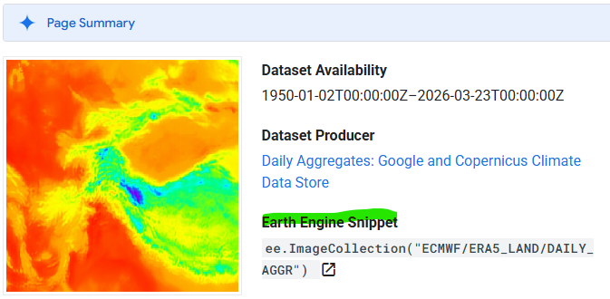
Name of the bands (variables) you’d like to extract. You can find the description of all available bands in their catalog.
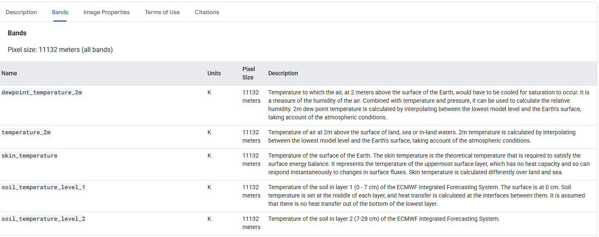
- You are registered and have an acess to Google Earth Engine
- You have created a GEE project you’ll connect to. It is IMPORTANT THAT YOU SPECIFY A PROJECT using the project parameter. If you forget what project IDs you have access to, find them here
- Python (download from here), miniconda, and rgee package are installed on your computer.
# You need to install python and miniconda
install_miniconda()
# I also used the remotes to install directly from github
remotes::install_github('r-spatial/rgee')
# Isntall all the python packages you need for
rgee::ee_install()
# manually set the location for python under conda if needed
library(reticulate)
reticulate::use_python("your path") # <- Update this with your local driver python location- There is one function in the rgee package that is broken. Run this code to manually overwrite that function.
#Overwrite the ee_extract function with this one
ee_extract <- function (x, y, fun = ee$Reducer$mean(), scale = NULL, sf = FALSE,
via = "getInfo", container = "rgee_backup", lazy = FALSE,
quiet = FALSE, ...)
{
rgee:::ee_check_packages("ee_extract", c("geojsonio", "sf"))
if (!quiet & is.null(scale)) {
scale <- 1000
message(sprintf("The image scale is set to %s.", scale))
}
if (!any(class(x) %in% rgee:::ee_get_spatial_objects("i+ic"))) {
stop("x is neither an ee$Image nor ee$ImageCollection")
}
if (any(class(x) %in% "ee.imagecollection.ImageCollection")) {
x <- ee$ImageCollection$toBands(x)
}
oauth_func_path <- system.file("python/ee_extract.py", package = "rgee")
extract_py <- rgee:::ee_source_python(oauth_func_path)
sp_objects <- rgee:::ee_get_spatial_objects("Table")
if (!any(class(y) %in% c("sf", "sfc", sp_objects))) {
stop("y is not a sf, sfc, ee$Geometry, ee$Feature or ee$FeatureCollection object.")
}
if (any("sf" %in% class(y))) {
sf_y <- y
ee_y <- sf_as_ee(y[[attr(y, "sf_column")]], quiet = TRUE)
}
else if (any("sfc" %in% class(y))) {
sf_y <- sf::st_sf(id = seq_along(y), geometry = y)
ee_y <- sf_as_ee(y, quiet = TRUE)
}
else if (any(ee_get_spatial_objects("Table") %in% class(y))) {
ee_y <- ee$FeatureCollection(y)
sf_y <- tryCatch(expr = ee_as_sf(y, quiet = FALSE, maxFeatures = 10000),
error = function(e) {
stop("The ee$FeatureCollection (y) must be not higher than 10 000.")
})
}
ee_add_rows <- function(f) {
f_prop <- ee$Feature$get(f, "system:index")
ee$Feature(ee$Feature$set(f, "ee_ID", f_prop))
}
ee_y <- ee$FeatureCollection(ee_y) %>% ee$FeatureCollection$map(ee_add_rows)
fun_name <- gsub("Reducer.", "", (ee$Reducer$getInfo(fun))[["type"]])
x_ic <- rgee:::bands_to_image_collection(x)
create_tripplets <- function(img) {
img_reduce_regions <- img$reduceRegions(collection = ee_y, reducer = fun, scale = scale,
...)
ee$FeatureCollection$map(img_reduce_regions, function(f) {
ee$Feature$set(f, "imageId", ee$Image$get(img, "system:index"))
})
}
triplets <- x_ic %>% ee$ImageCollection$map(create_tripplets) %>%
ee$ImageCollection$flatten()
table <- extract_py$table_format(triplets, "ee_ID", "imageId",
fun_name)$map(function(feature) {
ee$Feature$setGeometry(feature, NULL)
})
if (via == "drive") {
table_id <- basename(tempfile("rgee_file_"))
ee_user <- ee_exist_credentials()
dsn <- sprintf("%s/%s.csv", tempdir(), table_id)
table_task <- ee_init_task_drive_fc(x_fc = table, dsn = dsn,
container = container, table_id = table_id, ee_user = ee_user,
selectors = NULL, timePrefix = TRUE, quiet = quiet)
if (lazy) {
prev_plan <- future::plan(future::sequential, .skip = TRUE)
on.exit(future::plan(prev_plan, .skip = TRUE), add = TRUE)
future::future({
ee_extract_to_lazy_exp_drive(table_task, dsn,
quiet, sf, sf_y)
}, lazy = TRUE)
}
else {
ee_extract_to_lazy_exp_drive(table_task, dsn, quiet,
sf, sf_y)
}
}
else if (via == "gcs") {
table_id <- basename(tempfile("rgee_file_"))
ee_user <- ee_exist_credentials()
dsn <- sprintf("%s/%s.csv", tempdir(), table_id)
table_task <- ee_init_task_gcs_fc(x_fc = table, dsn = dsn,
container = container, table_id = table_id, ee_user = ee_user,
selectors = NULL, timePrefix = TRUE, quiet = quiet)
if (lazy) {
prev_plan <- future::plan(future::sequential, .skip = TRUE)
on.exit(future::plan(prev_plan, .skip = TRUE), add = TRUE)
future::future({
ee_extract_to_lazy_exp_gcs(table_task, dsn,
quiet, sf, sf_y)
}, lazy = TRUE)
}
else {
ee_extract_to_lazy_exp_gcs(table_task, dsn, quiet,
sf, sf_y)
}
}
else {
table_geojson <- table %>% ee$FeatureCollection$getInfo() %>%
ee_utils_py_to_r()
class(table_geojson) <- "geo_list"
table_sf <- geojsonio::geojson_sf(table_geojson)
sf::st_geometry(table_sf) <- NULL
table_sf <- table_sf[, order(names(table_sf))]
table_sf["id"] <- NULL
table_sf["ee_ID"] <- NULL
if (isTRUE(sf)) {
table_geometry <- sf::st_geometry(sf_y)
table_sf <- sf_y %>% sf::st_drop_geometry() %>%
cbind(table_sf) %>% sf::st_sf(geometry = table_geometry)
}
else {
table_sf <- sf_y %>% sf::st_drop_geometry() %>%
cbind(table_sf)
}
table_sf
}
}Check if everything it set up to extract data from GEE
# Make sure everything is installed for GEE
ee_check()When you’re done, and everything is set up correctly, you’ll see a message like this in your R console:
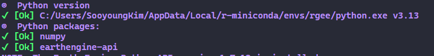
# remove credentials if you are switching the user ee_clean_user_credentials()
ee_clean_user_credentials()
# remove system vars
ee_clean_pyenv()
# Log-in with your GEE account. This will open a browser so that you can walk through the steps to generate a token.
# Copy-paste the token in the R console when prompted.
ee$Authenticate(auth_mode='notebook')
# Initialize - this will connect to a project.
ee$Initialize(project='your project ID') # <-- EDIT THIS FOR YOUR PROJECT[1] TRUEExtracting data from GEE
After completing the installation and connecting rgee to your Google Earth Engine (GEE) project, use the script below to extract your desired data. This example demonstrates how to retrieve a daily time series of minimum, maximum, and average temperatures, along with total precipitation, from the ERA5-Land dataset.
## If you're extracting a time-series
start <- "2024-05-01" # <- set the start date
end <- "2024-05-7" # <- set the end date
# Load the ERA5 image collection
era5 <- ee$ImageCollection('ECMWF/ERA5_LAND/DAILY_RAW')$filterDate(start, end) #<- Change this to any image collection on GEE
# Select the variables of interest.
era5_dat <- era5 %>% # data range
ee$ImageCollection$map(function(x) x$select(c('temperature_2m_min', # <- These 4 are variable names.
'temperature_2m_max', # You can change them when you want to download
'temperature_2m', # different data and/or variables.
'total_precipitation_sum'))) %>%
ee$ImageCollection$toBands() # from ImageCollection to Image
# Load your shapefile as sf
# We're skipping this step since we're using the Nigeria shapefile that was loaded in previous example.
# Extract the time series from Image Collection usign the shapefile
ee_ng_era <- ee_extract(x=era5_dat,
y=nigeria["ADM2_EN"],
sf = F)
# Re-shape the time series data
dat <- ee_ng_era %>% pivot_longer(-ADM2_EN, names_to = "var", values_to = "n") %>%
mutate(
date = str_sub(var, start = 2, end = 9),
var = str_sub(var, start = 11)
) %>% as.data.frame() %>%
pivot_wider(names_from = var, values_from = n)
dat %<>%
mutate_at(vars(temperature_2m, temperature_2m_max,
temperature_2m_min, total_precipitation_sum),
function(x){
x <- as.numeric(as.character(x))
unlist(x)
}) %>%
mutate(
date = as.Date(date, format = ("%Y%m%d"))
)Preview the data and save
You’ll notice the temperature values are in Kelvin (K). You can mutate them to Celcius by subtracting 273.
head(dat)# A tibble: 6 × 6
ADM2_EN date temperature_2m temperature_2m_max temperature_2m_min
<chr> <date> <dbl> <dbl> <dbl>
1 Aba North 2024-05-01 301. 306. 299.
2 Aba North 2024-05-02 300. 305. 299.
3 Aba North 2024-05-03 300. 302. 298.
4 Aba North 2024-05-04 301. 305. 298.
5 Aba North 2024-05-05 301. 306. 298.
6 Aba North 2024-05-06 301. 304. 298.
# ℹ 1 more variable: total_precipitation_sum <dbl># Aggregate the weekly average and sum and join with the shapefile
dat_ex <- dat %>% group_by(ADM2_EN, lubridate::week(date)) %>%
mutate(avg_temp = mean(temperature_2m, na.rm=T)-273,
total_rain = sum(total_precipitation_sum*1000, na.rm=T))
nigeria %<>% left_join(dat_ex, "ADM2_EN")
# Plot the maps
ggpubr::ggarrange(
nigeria %>% ggplot() + geom_sf(aes(fill = avg_temp)) +
scale_fill_gradient(
low = "yellow",
high = "red",
na.value = "light grey"
)+ theme_void() +
ggtitle("Average temperature of the week (Celcius)"),
nigeria %>% ggplot() + geom_sf(aes(fill = total_rain)) +
scale_fill_gradient(
low = "white",
high = "blue",
na.value = "light grey"
)+ theme_void() +
ggtitle("Total precipitation of the week (mm)")
)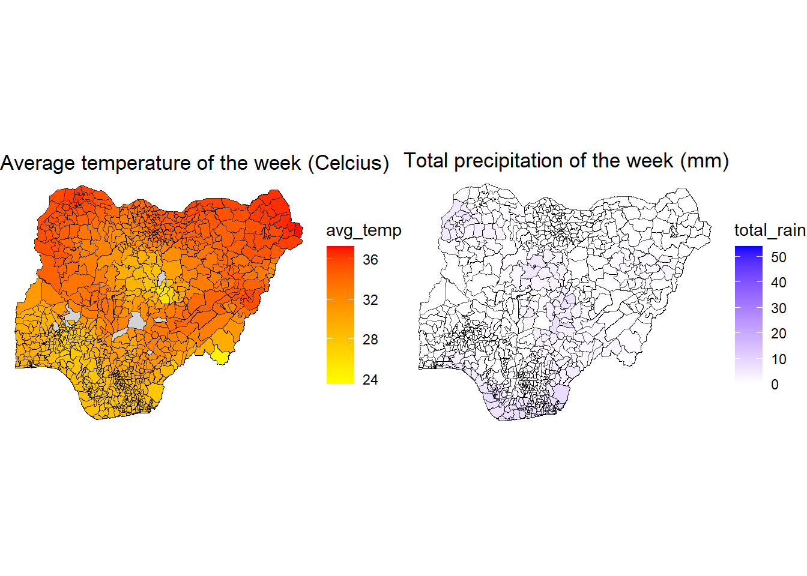
# Save
rio::export(file=here::here("clean data",
paste0("nga_data_era_5",Sys.Date(), ".csv")), # Save the file with the time stamp
x=dat
)Example 4. OpenStreetMap
This code uses the Open Street Map and a supporting package osmr to calculate the travel distance to the health facilities in Zambia. To do this, you will also need to source the health facility mapping data from GRID3. For methods to pull data from GRID3, please refer to the Example 2.
# Let's use the GRID3 Zambia map of health facilities. This follows the same approach as the GRID3 example.
url <- "https://services3.arcgis.com/BU6Aadhn6tbBEdyk/arcgis/rest/services/GRID3_ZMB_HealthFac_v01beta/FeatureServer/0/query?outFields=*&where=1%3D1&f=geojson"
zam_hcf <- geojson_sf(url)
# We will only use the Health Center
head(zam_hcf)Simple feature collection with 6 features and 14 fields
Geometry type: POINT
Dimension: XY
Bounding box: xmin: 27.84149 ymin: -14.44656 xmax: 28.46679 ymax: -12.54829
Geodetic CRS: WGS 84
FID Type SubType Name Source
1 1 Health Facility Health Center Mukobeko Township HC MOH
2 2 Health Facility Health Post Nkhruma Teachers College HP MOH
3 3 Health Facility Health Center Iseni HC MOH
4 4 Health Facility Health Center Kalulushi Township HC MOH
5 5 Health Facility Health Center Mpatamatu Section 26 HC MOH
6 6 Health Facility Health Center Mufulira T. College HC MOH
GlobalID Label Province
1 {B526E5D3-6E7C-4182-BF1A-222A850184FA} Mukobeko Township HC Central
2 {2C6E792A-BF17-4F53-B858-70FA76FB6C47} Nkhruma Teachers College HP Central
3 {DDCA07BD-842C-4BC2-BF2A-3005E4704592} Iseni HC Copperbelt
4 {1D4CBBCC-7FBF-49F1-BECA-1CDB38D4B6E8} Kalulushi Township HC Copperbelt
5 {AC7F0182-5DB9-4AB9-9F1C-52EA352A98F7} Mpatamatu Section 26 HC Copperbelt
6 {ACF5AEE2-AF79-471B-A069-3BF5DA0C05E4} Mufulira T. College HC Copperbelt
Prov_Code District Distr_Code LAT LONG Data_year
1 101 Kabwe 101005 -14.41901 28.40914 2017-2018
2 101 Kabwe 101005 -14.44656 28.46679 2017-2018
3 102 Chingola 102002 -12.54829 27.84149 2017-2018
4 102 Kalulushi 102003 -12.84628 28.09815 2017-2018
5 102 Luanshya 102005 -13.09915 28.31054 2017-2018
6 102 Mufulira 102009 -12.56386 28.23236 2017-2018
geometry
1 POINT (28.40914 -14.41901)
2 POINT (28.46679 -14.44656)
3 POINT (27.84149 -12.54829)
4 POINT (28.09815 -12.84628)
5 POINT (28.31054 -13.09915)
6 POINT (28.23236 -12.56386)zam_hcf %<>% filter(SubType=="Health Center")
# Confirm that this is a sf object
str(zam_hcf)Classes 'sf' and 'data.frame': 216 obs. of 15 variables:
$ FID : int 1 3 4 5 6 7 9 30 343 352 ...
$ Type : chr "Health Facility" "Health Facility" "Health Facility" "Health Facility" ...
$ SubType : chr "Health Center" "Health Center" "Health Center" "Health Center" ...
$ Name : chr "Mukobeko Township HC" "Iseni HC" "Kalulushi Township HC" "Mpatamatu Section 26 HC" ...
$ Source : chr "MOH" "MOH" "MOH" "MOH" ...
$ GlobalID : chr "{B526E5D3-6E7C-4182-BF1A-222A850184FA}" "{DDCA07BD-842C-4BC2-BF2A-3005E4704592}" "{1D4CBBCC-7FBF-49F1-BECA-1CDB38D4B6E8}" "{AC7F0182-5DB9-4AB9-9F1C-52EA352A98F7}" ...
$ Label : chr "Mukobeko Township HC" "Iseni HC" "Kalulushi Township HC" "Mpatamatu Section 26 HC" ...
$ Province : chr "Central" "Copperbelt" "Copperbelt" "Copperbelt" ...
$ Prov_Code : int 101 102 102 102 102 102 102 108 101 101 ...
$ District : chr "Kabwe" "Chingola" "Kalulushi" "Luanshya" ...
$ Distr_Code: int 101005 102002 102003 102005 102009 102010 102010 108008 101005 101005 ...
$ LAT : num -14.4 -12.5 -12.8 -13.1 -12.6 ...
$ LONG : num 28.4 27.8 28.1 28.3 28.2 ...
$ Data_year : chr "2017-2018" "2017-2018" "2017-2018" "2017-2018" ...
$ geometry :sfc_POINT of length 216; first list element: 'XY' num 28.4 -14.4
- attr(*, "sf_column")= chr "geometry"
- attr(*, "agr")= Factor w/ 3 levels "constant","aggregate",..: NA NA NA NA NA NA NA NA NA NA ...
..- attr(*, "names")= chr [1:14] "FID" "Type" "SubType" "Name" ...# Load and inspect Zambia shapefile
zam_shape <- read_sf(dsn = here::here("data", "ZAM_shapefile", "zmb_admbnda_adm2_dmmu_20201124.shp"))
str(zam_shape); plot(zam_shape)sf [115 × 15] (S3: sf/tbl_df/tbl/data.frame)
$ Shape_Leng: num [1:115] 4.72 3.66 8.34 7.16 1.95 ...
$ Shape_Area: num [1:115] 0.747 0.443 0.981 1.361 0.129 ...
$ ADM2_EN : chr [1:115] "Chibombo" "Chisamba" "Chitambo" "Itezhi-tezhi" ...
$ ADM2_PCODE: chr [1:115] "ZM1001" "ZM1007" "ZM1008" "ZM1009" ...
$ ADM2_REF : chr [1:115] NA NA NA NA ...
$ ADM2ALT1EN: chr [1:115] NA NA NA NA ...
$ ADM2ALT2EN: chr [1:115] NA NA NA NA ...
$ ADM1_EN : chr [1:115] "Central" "Central" "Central" "Central" ...
$ ADM1_PCODE: chr [1:115] "ZM10" "ZM10" "ZM10" "ZM10" ...
$ ADM0_EN : chr [1:115] "Zambia" "Zambia" "Zambia" "Zambia" ...
$ ADM0_PCODE: chr [1:115] "ZM" "ZM" "ZM" "ZM" ...
$ date : Date[1:115], format: "2020-01-03" "2020-01-03" ...
$ validOn : Date[1:115], format: "2020-11-24" "2020-11-24" ...
$ validTo : Date[1:115], format: NA NA ...
$ geometry :sfc_POLYGON of length 115; first list element: List of 1
..$ : num [1:433, 1:2] 28 28 28 28.1 28.1 ...
..- attr(*, "class")= chr [1:3] "XY" "POLYGON" "sfg"
- attr(*, "sf_column")= chr "geometry"
- attr(*, "agr")= Factor w/ 3 levels "constant","aggregate",..: NA NA NA NA NA NA NA NA NA NA ...
..- attr(*, "names")= chr [1:14] "Shape_Leng" "Shape_Area" "ADM2_EN" "ADM2_PCODE" ...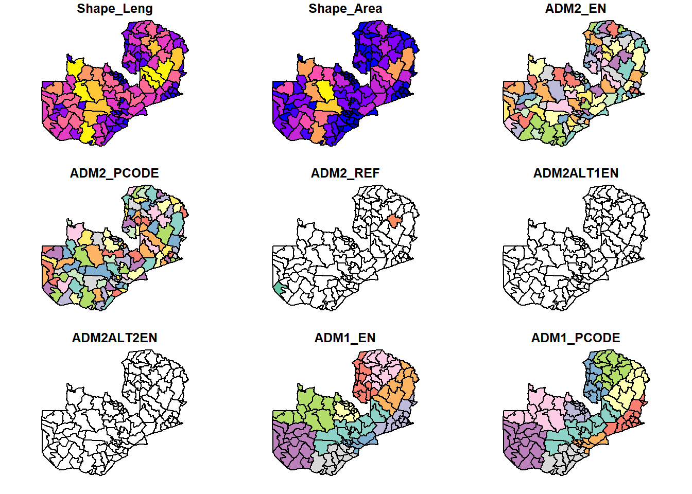
crs(zam_shape) # WGS 84[1] "GEOGCRS[\"WGS 84\",\n DATUM[\"World Geodetic System 1984\",\n ELLIPSOID[\"WGS 84\",6378137,298.257223563,\n LENGTHUNIT[\"metre\",1]]],\n PRIMEM[\"Greenwich\",0,\n ANGLEUNIT[\"degree\",0.0174532925199433]],\n CS[ellipsoidal,2],\n AXIS[\"geodetic latitude (Lat)\",north,\n ORDER[1],\n ANGLEUNIT[\"degree\",0.0174532925199433]],\n AXIS[\"geodetic longitude (Lon)\",east,\n ORDER[2],\n ANGLEUNIT[\"degree\",0.0174532925199433]],\n ID[\"EPSG\",4326]]"# Plot the health facilities on the map
ggplot(zam_shape) + geom_sf(aes(fill=ADM1_EN), alpha = 0.2) +
geom_sf(dat = zam_hcf, aes(color = SubType))+
theme_void() + ggtitle("Health Center Locations") +
theme(legend.title = element_blank())+
scale_fill_discrete(guide = "none")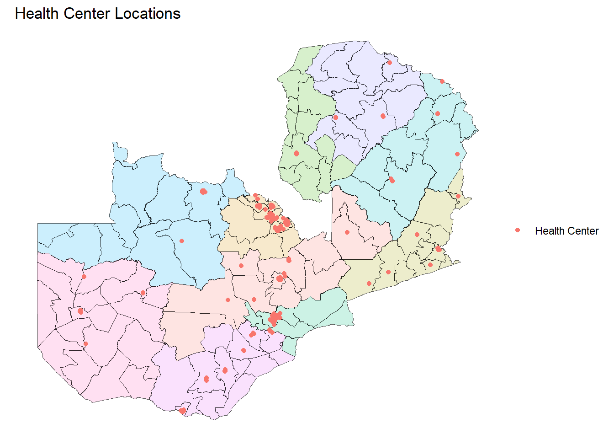
# 3. Calculate 30-minute drive-time isochrones
# 'breaks' defines the time intervals in minutes
buffers_list <- map(1:nrow(zam_hcf), function(i) {
# Extract the single point for this iteration
point <- zam_hcf[i, ]
# Try to calculate the isochrone
# I added a small 'try' block to prevent one failed point from breaking the whole script
iso <- try(osrmIsochrone(
loc = point,
breaks = 30, # Single value for a 30min boundary
), silent = TRUE)
# If successful, add the Facility Name/ID for identification later
if (!inherits(iso, "try-error")) {
iso$Facility_Name <- point$Name
iso$FID <- point$FID
return(iso)
} else {
return(NULL)
}
})
# Bind the list into df
buffers_30min <- bind_rows(buffers_list)
# Plot the buffer area for eacch faciliy on the map
ggplot(zam_shape) + geom_sf() +
geom_sf(dat = buffers_30min, fill = "red", color = NA, alpha = 0.2)+
geom_sf(dat = zam_hcf, aes(color = SubType))+
theme_void() + ggtitle("Health Center Locations and 30-min buffer area") +
theme(legend.title = element_blank())+
scale_fill_discrete(guide = "none")+
theme(legend.position = "bottom")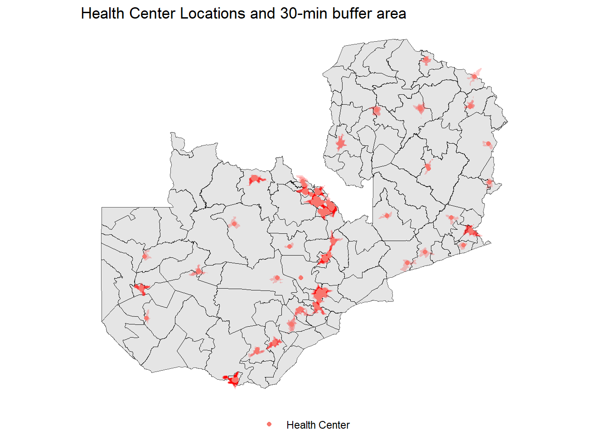